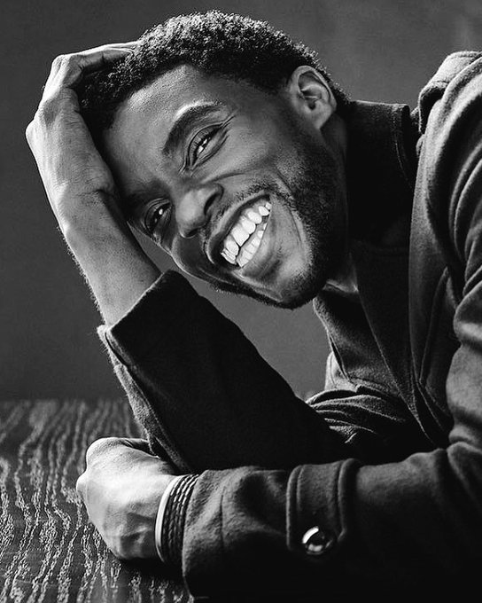

“Poderíamos ser seres humanos completos nos papéis que estávamos desempenhando, que poderíamos criar
um mundo que exemplificasse um mundo que queríamos ver.”
Chadwick Aaron Boseman (Anderson, 29 de novembro de 1976 — Los Angeles, 28 de agosto de 2020) foi um ator, diretore roteirista norte-americano. Ele era mais conhecido por seus retratos de figuras históricas da vida real.Boseman foi criado cristão, em Anderson, Carolina do Sul, filho de Carolyn e Leroy Boseman, ambos afro-americanos.Sua mãe era uma enfermeira e seu pai trabalhava em uma fábrica de têxteis.
Timeline
- Em 2008:fez o papel de Floyd Little no filme The Express: The Ernie Davis Story.
- Em 2012:fez o papel de Lt. Samuel Drake no filme The Kill Hole.
- Em 2013:fez o papel de Jackie Robinson no filme 42.
- Em 2014:fez o papel de Vontae Mack no filme Draft Day.
- Em 2016:fez o papel de Tote no filme Deuses do Egito.
- Em 2017:fez o papel de Thurgood Marshall no filme Marshall.
- Em 2018:fez o papel de T'Challa / Pantera Negra no filme Black Panther.
- Em 2019:fez o papel de Andre Davis no filme Avengers: Endgame.
- Em 2020:fez o papel de Norman Earl "Stormin' Norm" Holloway no filme Da 5 Bloods.